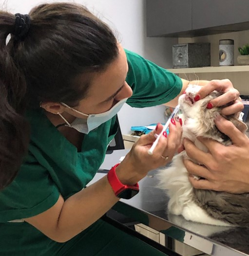
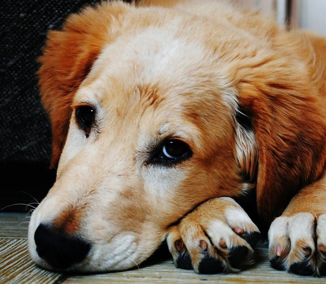
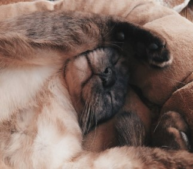
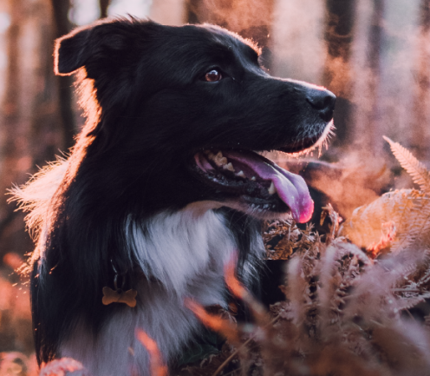

¿Quiénes Somos?
Somos un equipo de profesionales dedicados a cuidar la salud de tu mascota
Atención clínica e internación las 24 horas del día, los 365 días del año. Contamos con instalaciones equipadas con quirófano de última generación, farmacia y todas las especialidades veterinarias. Además, nos enorgullecemos de disponer de la mejor tecnología disponible en el campo veterinario, lo que nos permite ofrecer diagnósticos precisos y tratamientos avanzados para garantizar el bienestar y la salud óptima de nuestras mascotas. Nuestro compromiso es proporcionar un servicio integral y de alta calidad para satisfacer las necesidades de nuestros pacientes y sus familias.
Nuestro Bienestar, Nuestra prioridad

Un mundo, una salud: así cuidamos el medioambiente en Animal's
Nuestro compromiso con nuestro mundo y la salud es muy importante para todos los que hacemos en Animal´s, cuidando y respetando nuestro medioambiente somos parte del cambio.

Enfermedades más frecuentes en perros y gatos
El cuidado de la salud de nuestras mascotas es un tema que siempre debe estar presente y que debemos de tomar con mucha seriedad. Una atención adecuada y a tiempo puede evitarnos una preocupación o gastos no planeados.

El otoño y nuestras mascotas, entre hojas y pelos
La llegada del otoño representa un nuevo desafío en la salud de nuestras mascotas. Mayor concentración de polvo y alérgenos en el ambiente y la mayor amplitud térmica a lo largo del día, son apenas algunos de los factores que ponen en riesgo al sistema inmune de perros y gatos.
Participamos activamente en la resolución de objetivos comunes para alcanzar lo que, sin duda, serán logros compartidos. Trabajamos de forma colaborativa, razón por la cual favorecemos la sinergia entre las diversas áreas de especialización. A través de una visión interdisciplinaria, promovemos el diálogo abierto y el intercambio de conocimientos. De este modo, contribuimos al aprendizaje continuo de nuestra red y de cada uno de sus integrantes.